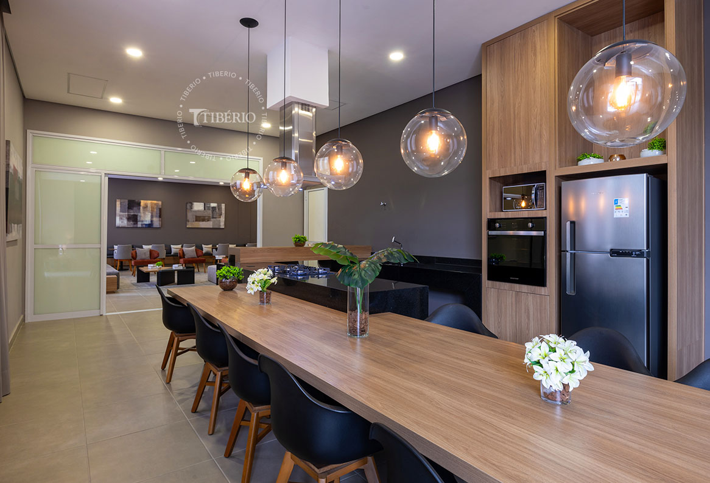
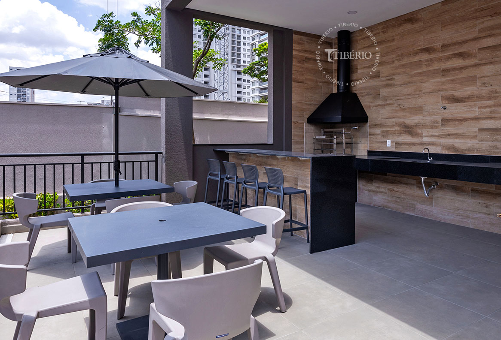
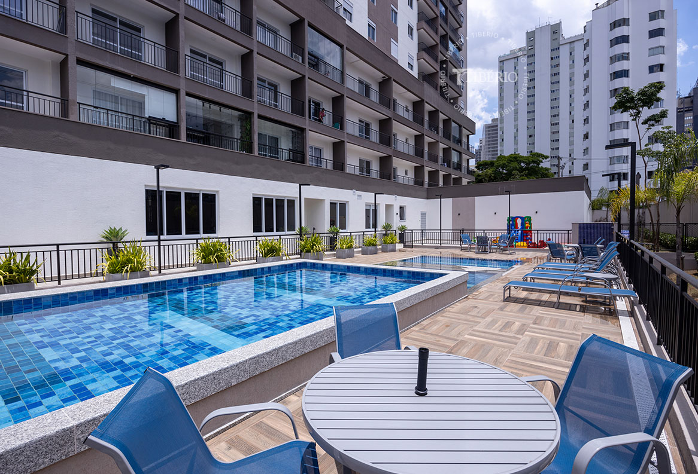
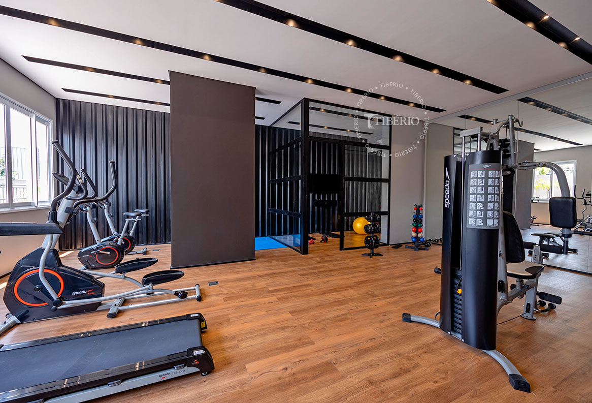
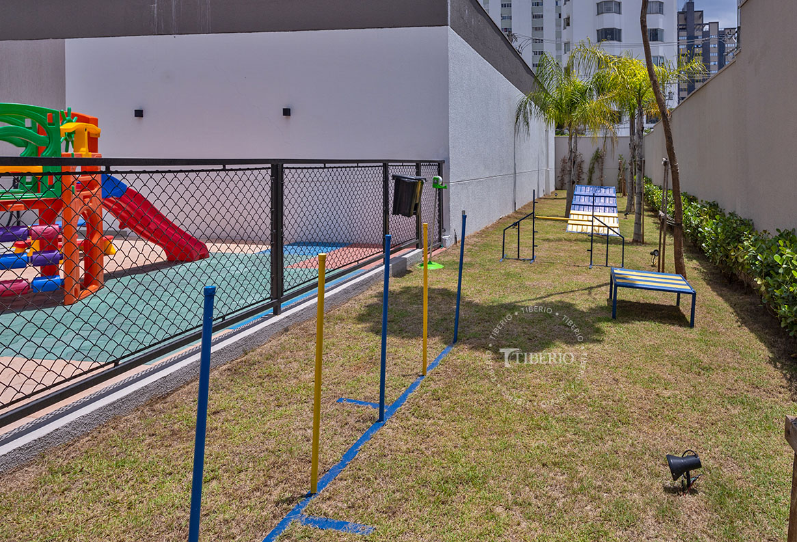

Constantino Campo Belo: studios e apartamentos na Zona Sul
Conheça o empreendimento da Tibério no Campo Belo, com opções de studios e apartamentos de 2 e 3 dormitórios, lazer e localização estratégica em São Paulo.
Conheça o Constantino Campo Belo da Tibério
O Constantino Campo Belo é um empreendimento residencial localizado em um dos bairros tradicionais da Zona Sul de São Paulo. O projeto reúne opções de studios e apartamentos de 2 e 3 dormitórios para diferentes necessidades e estilos de vida.
A região do Campo Belo oferece infraestrutura de comércio, serviços, restaurantes, escolas e transporte público, além de acesso a importantes vias da capital.
O empreendimento também conta com espaços de lazer e convivência, oferecendo alternativas para aproveitar o tempo em casa com mais conforto e praticidade.
MUDE COM APENAS 10% DE ATO!
Consulte as condições comerciais vigentes para o Constantino Campo Belo e verifique as unidades participantes, valores e fluxo de pagamento. Oferta sujeita à disponibilidade e confirmação.
Visite o apartamento decorado na torre

Conheça o apartamento decorado
Visite o decorado na torre e conheça de perto os ambientes, acabamentos e possibilidades de morar no Constantino Campo Belo.
Entre em contato para confirmar as condições de visita e agendar seu atendimento.
Galeria de fotos do Constantino Campo Belo
Confira imagens dos ambientes e espaços de lazer do empreendimento.






Apartamentos de 3 dormitórios no Constantino Campo Belo
Entre as opções do empreendimento, esta página destaca a tipologia de apartamentos de 3 dormitórios, com aproximadamente 70 m², uma suíte, varanda gourmet e duas vagas de garagem, conforme as informações fornecidas.
Os ambientes foram apresentados para oferecer conforto e funcionalidade, com espaço para a rotina familiar e para receber amigos.
O empreendimento também oferece outras configurações residenciais, incluindo studios e apartamentos de 2 dormitórios. Consulte as plantas disponíveis para conhecer as diferenças entre as tipologias.
Como é morar no Campo Belo?
O Campo Belo é um bairro tradicional da Zona Sul de São Paulo e combina perfil residencial com uma ampla oferta de comércio, serviços e opções de mobilidade. Para quem procura apartamento no Campo Belo, a região oferece infraestrutura para diferentes necessidades do dia a dia.
O bairro possui supermercados, farmácias, restaurantes, padarias, academias, escolas e outros estabelecimentos comerciais. Essa variedade permite encontrar diversos serviços sem precisar realizar deslocamentos longos.
Na mobilidade, a região conta com acesso à Linha 5-Lilás do Metrô, incluindo as estações Campo Belo e Eucaliptos. Também possui ligação com importantes avenidas de São Paulo, facilitando o deslocamento para Moema, Brooklin, Vila Olímpia e outras áreas da Zona Sul.
Outro ponto de destaque é o acesso ao Aeroporto de Congonhas e a centros comerciais e empresariais. O Shopping Ibirapuera também está entre as opções de compras e serviços da região.
Para famílias, profissionais e pessoas que valorizam localização e infraestrutura urbana, morar no Campo Belo pode representar uma combinação interessante entre tranquilidade residencial e facilidade de acesso a diferentes regiões de São Paulo.
Ficha técnica do Constantino Campo Belo
| Empreendimento | Constantino Campo Belo |
| Construtora | Tibério |
| Bairro | Campo Belo |
| Cidade | São Paulo – SP |
| Opções de tipologia | Studios e apartamentos de 2 e 3 dormitórios |
| Tipologia destacada nesta página | 3 dormitórios |
| Metragem destacada | Aproximadamente 70 m² |
| Suítes | 1 suíte na tipologia apresentada |
| Vagas | 2 vagas na tipologia apresentada |
| Varanda | Varanda gourmet |
| Status informado | Em comercialização |
Consulte a disponibilidade e as características específicas de cada unidade.
Lazer e diferenciais do Constantino Campo Belo
O empreendimento reúne espaços de lazer e convivência para diferentes momentos do dia a dia.
🏊 Piscina
Ambiente de lazer para aproveitar momentos de descanso.
🏋 Academia
Espaço fitness para atividades físicas e exercícios.
🐶 Pet Place
Área destinada ao lazer dos animais de estimação.
🍽 Espaço Gourmet
Ambiente para confraternizações e convivência.
🔥 Churrasqueira
Espaço para reunir familiares e amigos.
🎉 Salão de Festas
Ambiente para celebrações e encontros.
Localização do Constantino Campo Belo
O Constantino Campo Belo está localizado na região do Campo Belo, na Zona Sul de São Paulo. O bairro conta com acesso às estações Campo Belo e Eucaliptos da Linha 5-Lilás do Metrô, além de importantes vias da cidade.
A região também oferece acesso ao Shopping Ibirapuera, ao Aeroporto de Congonhas, a supermercados, escolas, restaurantes e serviços.
Está pesquisando outros apartamentos na região?
Ver apartamentos no Campo BeloPerguntas frequentes sobre o Constantino Campo Belo
O que é o Constantino Campo Belo?
É um empreendimento residencial da Tibério localizado no Campo Belo, na Zona Sul de São Paulo, com opções de studios e apartamentos de 2 e 3 dormitórios.
Quais tipologias estão disponíveis no empreendimento?
O empreendimento apresenta opções de studios e apartamentos de 2 e 3 dormitórios. Consulte as plantas e a disponibilidade atualizada.
Qual é a metragem do apartamento de 3 dormitórios?
A tipologia destacada nesta página possui aproximadamente 70 m². Confirme as metragens e plantas disponíveis no atendimento.
O apartamento de 3 dormitórios possui suíte?
Sim. A tipologia apresentada possui uma suíte.
Quantas vagas de garagem possui a tipologia apresentada?
A tipologia de aproximadamente 70 m² apresentada nesta página possui duas vagas, conforme as informações fornecidas.
O empreendimento possui varanda gourmet?
Sim. A tipologia de 3 dormitórios apresentada conta com varanda gourmet.
Quais são os espaços de lazer?
Entre os espaços apresentados estão piscina, academia, Pet Place, espaço gourmet, churrasqueira e salão de festas.
O Constantino Campo Belo fica próximo ao metrô?
A região do Campo Belo conta com as estações Campo Belo e Eucaliptos da Linha 5-Lilás do Metrô.
Como funciona a condição de 10% de ato?
A condição anunciada deve ser confirmada no atendimento, pois pode depender da unidade, disponibilidade e regras comerciais vigentes. Consulte o fluxo completo de pagamento antes de fechar a compra.
Como consultar preços e disponibilidade?
Entre em contato pelo WhatsApp para receber informações atualizadas sobre plantas, valores, unidades disponíveis, condições comerciais e visita ao decorado.
Conheça o Constantino Campo Belo
Solicite plantas, tabela de preços atualizada, disponibilidade das unidades e condições de pagamento. Também é possível consultar o agendamento de visita ao apartamento decorado.
💬 Falar com Sandro pelo WhatsApp